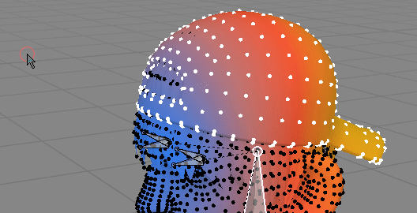
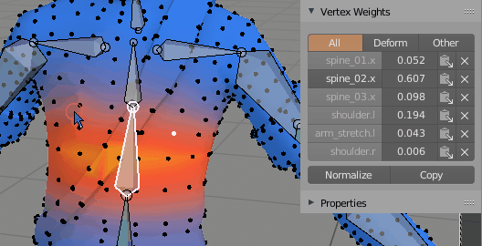
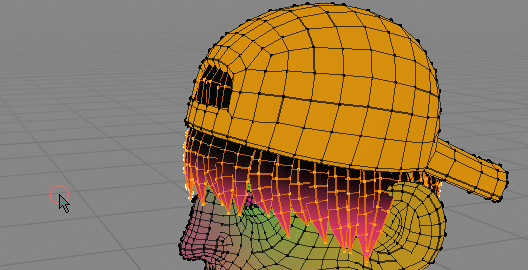
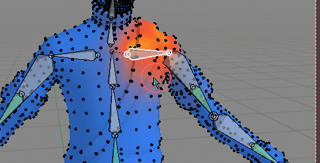
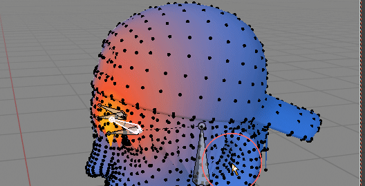
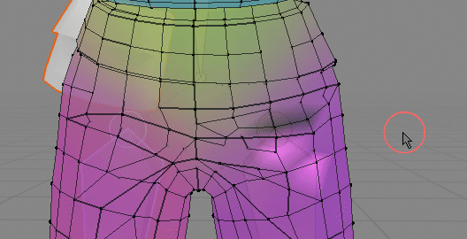
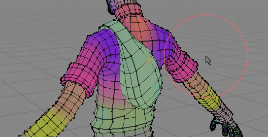

Set Weight¶
 Set Weight - is modal operator that lets you adjust selected vertices weights. Set active vertex group weight to one of values: 0, 0.2, 0.5, 0.8, 1. Then you can increase or decrease weights by +/- 0.1 by scrolling up or down with middle mouse button. There are three mixing modes (changed by pressing 'M' key):
- Replace - replaces existing weighs with new target value.
- Add - add weight to old one
- Subtract - remove weight from old one
You may also choose to normalize resulting weights (with 'N' key).
 Pick weight helper button - copies active vertex group weight (0.607) from vertex. Now you can use icon on right, to fill selected vertices with this 0.607 weight
Fill vertex weight¶
 Filling dark spots (low vertex weights) with head bone weight, to pin hair to head
If vertex weight is low (total sum of vert weights is below 1), then increase active vertex group weight until sum reaches 100%
Select active vertex group bone¶
 On more complicated rigs it may be hard to find bone that influences selected vertices Select bone based on current active vertex group
Copy / Paste Vertex weights¶
 You can copy one vertex weight (from belt), and paste to pouch to make it more rigid (it will have same vertex weights on all vertices)
Copy all Vertex weights from selection and paste to target vertices.
You can copy one vertex weight (from belt), and paste to pouch to make it more rigid (it will have same vertex weights on all vertices)
Copy all Vertex weights from selection and paste to target vertices.
- you can copy one vertex weights to multiple target vertices (like on gif above)
- if you copy N vertices, then paste to N target vertices, the order of selected vertices weights will be preserved
Transfer Vertex Weights¶
 Transfer weights from eyelid bone to head bone on selected vertices Select source bone A - then target bone - B. Weights on selected vertices will be moved from vertex group A to B This operator has few properties (F9) key:
Mixing Method of vertex group A with B (target / receiver):
- Replace - Replace weight B with A
- Add - Add A to B
- Lighten - Lighten
- Difference - subtract weighs A from B
- Multiply - Multiply A times B
Clear Source Weights - if true remove vertex weights from source vertex group A
Mirror Weights¶
Transferring weight from right side, to left using Mirror operator
How To use:
- select 'source' side of mesh (usually with correct weights),
- run 'Mirror Weights' from Ctrl+X pie menu.
Pairing range of mirrored verts is defined by 'Symmetry Search Distance' parameter. Bigger value will make it easier to find mirrored vert.
Properties (F9):
Symmetrize:
- Off - mirrors weights from one side to another
- Soft - same as above, but if vertex group has no mirrored counterpart (e.g. Spine or Head vert groups), then symmetrize them. Rest of weights will be mirrored. This is the default option
- Force - all vertex groups will be symmetrized. Usually not what you want, since it will, for example, assign weights to Arm.R from both sides of character (rather than just from right side)
Automatically pick sampling side - if you select bone or verts on right side, then weights from right will be mirrored to left (and vice versa). Disable it to manually pick if sampling should be done from Left or Right side of character.
Mirror Project Weights¶
 Fixing broken pants. Notice that pants topology is not symmetrical Same as 'Mirror Weights' but works great with non symmetrical topology meshes. The main difference in workflow is that you select the 'broken' side of mesh first, then run 'Mirror Project', so it is reverse of how normal 'Mirror Weights' work (where you select fixed side of mesh first)
Properties (F9):
- All Groups - if True mirror all vertex group to selected vertices (or just active one if set to False)
- Symmetrize - instead of mirroring vertex group from left bone to right bone, symmetrize vertex group(s). Useful for center bones - eg spine.
Project weights¶
 In this case weights from body are projected to backpack
Project weights from non selected mesh parts to selection
Override from adjacent¶
 Override selected verts weights from adjacent non selected vertices. Helpful in removing broken vertices.
Override selected verts weights from adjacent non selected vertices. Helpful in removing broken vertices.